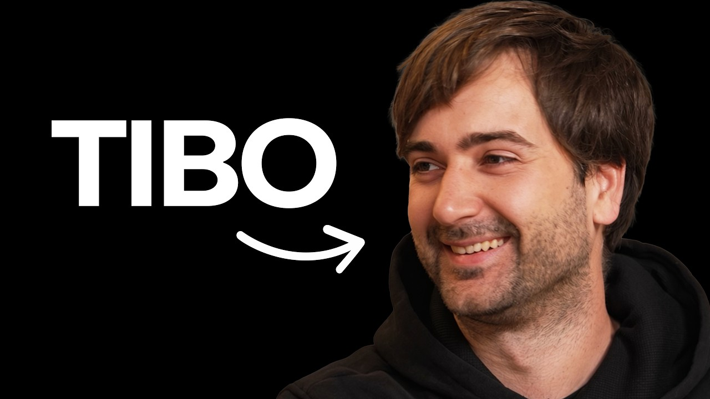

Voices
Tibo Interview
THE NEXT AI WAVE
Published · Matthew Berman

OpenAI’s Tibo talks with Matthew Berman about lessons from Google and DeepMind, personal agents, Codex, ultrafast inference, recursive self-improvement, and bringing AI to everyone.
- Runtime
- 44:28
- Format
- 07 CHAPTERS
- Original English transcript
- 142 KOREAN PARAGRAPHS
CARROT CAVE INSIGHTS
- The next AI wave starts not with models themselves, but with personal agents that adapt to how people work.
- Ultrafast inference reduces the burden of managing multiple agents and restores the flow of following one idea through to completion.
- Good products need a consistent direction, simplicity, and fast shipping—not just more features.
- Model self-improvement includes not only building research models, but also improving inference infrastructure and tool use.
- As AI becomes more efficient, broader access and practical everyday benefits become more achievable goals.
Interview Details, Sources, and Method
- Original title: How to Understand the Next Wave of AI Before Everyone Else | Tibo Interview
- Guest: Tibo from OpenAI
- Interviewer: Matthew Berman
- Channel: Matthew Berman
- Official publication: Matthew Berman, August 24, 2026
- Method: Overlapping YouTube English auto-captions were cleaned up, grouped into sentences, and aligned with the official video’s timestamps.
Full original English transcript
Loading the full transcript…
Lessons on Shipping from Google and DeepMind
00:00:00 ↗He reflects on building language models and research tools at Google and DeepMind. The lesson: even with the technology in hand, hesitating to ship means missing user feedback and real-world impact.
OpenAI’s Culture and Pace of Reinvention
00:04:22 ↗He describes OpenAI’s culture of acting with conviction, gathering user feedback quickly, and shifting resources toward better opportunities—even at the expense of existing successes.
Personal Agents and the Changing Way We Build
00:07:23 ↗He outlines a future beyond manually managing skill files and multiple subagents: personal agents that deeply understand users’ and teams’ goals and proactively help.
Unifying ChatGPT and Codex, and Human-AI Interaction
00:14:27 ↗He explains why ChatGPT and Codex are being unified into one personal agent for both coding and non-coding tasks, along with voice-first interfaces and interactions tailored to each person.
Value over Competition, Access over Limits
00:20:25 ↗He says the focus is on OpenAI’s unique strengths and value rather than competition with Anthropic. He explains how greater efficiency and adjusted usage limits can bring powerful AI to more people.
Recursive Self-Improvement and Pausing Frontier Training
00:30:25 ↗He describes recursive self-improvement broadly: models improving not just the next model, but also inference infrastructure, CUDA kernels, products, and tool use. He also discusses when frontier training should stop.
New Ways to Use Ultrafast AI
00:34:13 ↗He discusses how ultrafast inference changes development workflows in situations where every second counts, such as incident response; how falling costs could make these speeds commonplace; and why people should try AI firsthand.